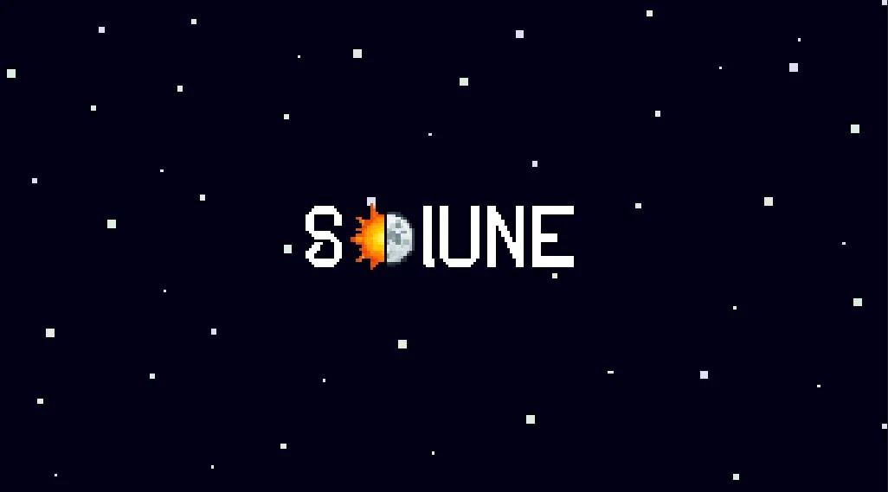

PROJECT
SOLUNE
A story-driven RPG focused on exploration, choices, and consequences.

Description
The world is changing. Something is spreading, and no one fully understands it.
You play as Elysia, a girl with the power of HOPE, as she travels through an unstable world trying to heal a spreading corruption before it’s too late.
SOLUNE features a unique battle system focused on strategy and choice, with multiple ways to end battles and consequences that affect both characters and the world around you.
I serve as the lead programmer and designer, working on the systems and structure that bring the game to life. SOLUNE is an ongoing project developed by a small team.
Features
Exploration-driven gameplay
Players can explore a rich and immersive world, uncovering secrets and discovering new areas as they progress through the game.
Meaningful choices
The game emphasizes player choice, with decisions that have significant consequences on the story and world.
Story-focused role-playing
SOLUNE offers a narrative-driven experience, allowing players to engage with characters and storylines that evolve based on their actions.
Technologies & Tools
SOLUNE is developed in GameMaker using the Undertale Engine by TML. What began as a fangame has evolved into an independent project with its own systems, mechanics, and creative direction. As lead programmer and designer, I collaborate with our team to bring the game's ideas to life.
Team
The SOLUNE project is developed by a small team of dedicated individuals, each contributing their unique skills and expertise to create a compelling and immersive gaming experience.
The current team consists of:
Creator, Director, Lead Writer, Composer & Programmer
Austin McDonald
Assistant Composer
John A. Moore
Assistant Composer
Samuel Jowers
Assistant Composer
N7 Beats
Lead Battle Sprite Artist
Rowan Woodbridge-O'Brien
Build Tester & Lead Overworld Sprite Artist
Gideon Conrad
Assistant Writer
Caleb Rodgers
Assistant Writer
Lexie McDonald
Development
Development involves designing and implementing gameplay systems while balancing technical architecture with the intended player experience. As lead programmer and designer, I work on turning the project's creative ideas into functional systems and solving the challenges that arise throughout development.
Explore the Project
Learn more about SOLUNE and follow the project's development through its official page.